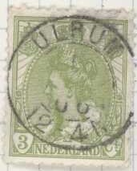

Kleinrondstempels
Return To Catalogue - Netherlands
Note: on my website many of the
pictures can not be seen! They are of course present in the
catalogue;
contact me if you want to purchase it.
If my information is correct, the 'Kleinrond stempels' or Small Circular Cancels were first introduced in 1874(?).

'Large circular cancel' for comparison (if my information is
correct, this cancel was introduced in 1894?).
In the list that follows, an 'R' behind the townname indicates that the cancel is quite rare. There might be some post offices that are not yet included in the following list. Note: in Dutch language the letter combination 'IJ' is assumed to be identical to the English 'Y' and usually put there in Dutch alphabet. However, for easy reference sake, I've listed them under 'I'.
Aagtekerke Aalsmeer (main post office) Aalst (Gld) Aalst (N.B.): R Aalten ...? Aardenburg Aarlanderveen Aarle-Rixtel Abbekerk Abbenbroek: R Abcoude ...? Achlum: R Acquoij: R Adorp: R Adward Afferden (Gld) Afferden (Limb):R Akkrum: R Albergen: R Alblasserdam (main post office) Alem Alfen (Gld):R Alfen Alkmaar (main post office) Almelo (main post office) Almeloo Almkerk Alphen (main post office) Alphen (NB) Ameide: R Amerongen (main post office) Amersfoort (main post office) Ammerstol Ammerzoden Amstelveen Amstenrade Amsterdam (main post office) Amsterdam 1 Amsterdam 2 Amsterdam 3 Amsterdam 4 Amsterdam 5 Amsterdam 6 Amsterdam 7 Amsterdam 8 Amsterdam 9 Amsterdam 10 Amsterdam 11 Amsterdam 12 Amsterdam 13 Amsterdam 14 Amsterdam P:H:Kade Amsterdam R.P.S.B. Amsterdam-Tent Amsterd:-Amstel Amsterd:Amsteldijk Amsterd:Amstelstr Amsterd:-Handelsk. Amsterd:Houtmanka Amsterd.-P.C.Hooftstr Amsterd:Spiegelstr Amsterd:-Westerdok Amst:Amsteld..(?) Amst:Commn str Amst:-Houtmk Amst:-Overtoom Amst:P:C:H:str Amst:P:H:Kade Amst:-SpiegelstrA Amst:W.Dok Ams:P:C:H:str Andel (Grn) Andelst Andijk Angeren Angerlo Anjum: R Ankeveen Anna P.Polder Apeldoorn (main post office) Appelscha Appelteren:R ...? Appingedam (main post office) Arcen Arkel Arnhem (main post office) Arnhem 2 Arum: R Asperen Assen (main post office) Assendelft Asten (main post office) Augustinusga Avenhorn Axel
Baaksem: R Baambrugge ...? Baardwijk Baarle-Nassau Baarn (main post office) Baexem Baflo Bakhuizen Bakkeveen: R Balk Balkbrug Barendrecht Barneveld (main post office) Barsingerhorn Batenburg Bath: R Bathmen Bedum Beek bij Nijmegen Beek bij Zevenaar: R Beek (Gld) Beek (Limb) Beek en Donk Beekbergen Beers: R Beers (NB): R Beerta Beest Beetgum: R Beetsterzwaag Beilen Bellingwolde Bemmel Bennebroek Bennekom Benningbroek Benschop Benthuizen: R Berchem Bergambacht: R Bergeijk Bergen (NH) Bergen op Zoom Bergharen Bergschenhoek:R Bergum Berkel Berkhout Berlikum (Friesl) Berlikum (NB) Best Beugen Beusichem Beverwijk (main post office) Bezooijen Bierum:R Biervliet Biezelinge Biggekerke: R De Bilt (main post office) ...? Birdaard Blaauwkapel: R Bladel Blankenham Blaricum Bleiswijk Bierik Biervliet Blesse Blijham Blokzijl (main post office) Bodegraven (main post office) Boekel Bolnes Bolsward (main post office) den Bommel Boornbergum Borculo Borger Borkel: R Borkeloo (main post office) Borne (main post office) Borselen Boskoop Boven-Hardinxveld Bovenkarspel Boxmeer (main post office) Boxtel (main post office) Bozum: R Brakel: R Brantgum: R Breda (main post office) Breskens (main post office) Breukelen (main post office) Brielle (main post office) Broek in Waterl Broek op L Dijk Brouwershaven Bruchem Bruinisse (main post office) ...? Brummen (main post office) Budel Buiksloot Buitenpost (main post office) Bunde: R Bunnik Bunschoten Buren Burgerbrug Burgh Bussum (main post office) Buurmalsen
Capelle a/d IJ Castricum Chaam Charlois de-Cocksdorp: R Colmschate Colijnsplaat Cornjum Cothen Cuijk (main post office) Culenborg (main post office) Dalem: R Dalen Dalfsen Dedemsvaart (main post office) den Deijl: R Deil Deinum: R Delden (main post office) Delfshaven (main post office) Delft (main post office) Delfzijl (main post office) Denekamp Deurne Deursen Deutichem (main post office) Deventer (main post office) ...? Diedam Diemerbrug: R Diepenheim Diepenveen Dieren (main post office) Diesen Diever Dieverbrug Dinteloord Dinther Dinxperlo Dirkshorn Dirksland (main post office) Dodewaard Doesborgh Doesburg (main post office) Doetinchem (main post office) Dokkum (main post office) Domburg Dongen (main post office) Donkerbroek Doorn (main post office) Doornenburg Dordrecht (main post office) Dorenburg Drachstercompagnie: R Drachten (main post office) Dragten Drempt: R Dreumel: R Driebergen (main post office) Drieborg: R Driel Driesum: R Drijschor: R Drimmelen Drogeham: R Dronrijp Drumpt: R Drunen Druten (main post office) Dubbeldam: R Duiven Duivendijke: R Duizel: R Dussen Dwingeloo
Echt Echteld: R Echterbrug: R Eck en Wiel Edam (main post office) Ede (main post office) Ee Eede Eelde Eemnes-Binnen Eemnes-Buiten: R Eenrum Eerbeek Eersel Eeten: R Eext Egmond aan Zee (main post office) Egmond a/d Hoef Eibergen (main post office) Eijsden Eindhoven (main post office) Elburg (main post office) Elden: R Elkersee: R Ellekom Ellemeet Ellewoudsdijk Elshout Elspeet: R Elst (Gld) (main post office) Elst (Utr) Elst (main post office) Emmen (main post office) Emmer-Compascuum Emst: R Engelen Enkhuizen (main post office) Enschede (main post office) Enschot: R Enter Enumatil: R Epe (main post office) Ermelo Ermeloo Erp Escharen Etten: R Etten (NB) Everdingen: R Exlo: R Ezinge: R
Ferwerd Fijnaart Finsterwolde Franeker (main post office) Frederiksoord Gaanderen Gaast: R Gameren: R Garrelsweer: R Garijp: R Gassel: R Gasselte: R Gasselter-Nijveen Geertruidenberg (main post office) Geervliet: R Geesteren: R Geffen Geldermalsen (main post office) Geldrop (main post office) Geleen Gemert Gemonde Genderen Gendringen Genemuiden Gennep (main post office) Gent Giesbeek: R Giesendam Giessen-Nieuwkerk: R Gieten Giethoorn Gilze Ginneken Godlinze: R Goedereede Goes (main post office) Goidschalxoord Goor (main post office) Goorle Gorinchem (main post office) Gorredijk Gorssel Gouda (main post office) Gouderak Goudriaan Goudswaard Graauw: R Gramsbergen: R Grave (main post office) s'Graveland (main post office) s'Gravendeel s'Gravenhage (The Hague) (main post office) s'Gravenmoer s'Gravenpolder s'Gravenzande (main post office) s'Greveld-Capelle Grijpskerk Grijpskerke Groede Groenlo (main post office) Groesbeek Groningen (main post office) Gronsveld Groot-Ammers Groot-Schermer Groote Lindt: R Grootebroek: R Grootegast Grouw Grubbenvorst: R Gulpen (main post office)
s'H.Arensk. H.Hugowaard: R Haaften Haaksbergen (main post office) Haamstede Haarlem (main post office) Haarlem R.P.S.B. Haarl:-Bloemend. Haarlemmermeer (main post office) Haastrecht Haarsteeg Haarstrecht Haelen Hagestein Halen: R Hallum Halsteren den Ham Hank (N.Br.): R Hansweert: R Hantum (Fr): R Hapert: R Haps: R Hardenberg Harderwijk (main post office) Hardinxveld (main post office) Haren (Gron) Haren Haren (NB) Harlingen (main post office) Harmelen Hasselt (main post office) Hasselt (Ov) (main post office) Hattem (main post office) Havelte Hazerswoude Hazerswoude (Rijnd) Hedel Heeg Heelsum Heemskerk Heemstede (main post office) Heenvliet s'Heer H.Kinderen: R Heerde s'Heerenberg s'Heerenhoek Heerenveen (main post office) Heerewaarden Heerjansdam Heerle (main post office) Heerlen (main post office) Hees Heesch Heeswijk Heeze Heijen: R Heilo: R Heinenoord: R Heiningen: R Heinkenszand Heinoo: R Hekelingen: R Hekendorp: R Helden-Pann Helder (main post office) den Helder (main post office) Helenaveen Hellendoorn Hellevoetsluis (main post office) Hellouw Helmond (main post office) Helvoirt Helvoort Hemmen Hemrik H.Ido Ambacht Hengelo (Gld) Hengeloo (Gld) Hengelo (main post office) Hengeloo (main post office) Hensbroek: R s'Herenberg Herkingen: R s'Hertogenbosch (main post office) Herveld: R Herwen: R Herwijnen Heteren Heukelum: R Heusden (main post office) Heijthuizen Hijpolitushoef Hillegersberg: R Hillegom (main post office) Hilvarenbeek Hilversum (main post office) Hindelopen: R Hippolijtushoef Hoedekenskerke: R Hoek: R Hoek van Holland Hoevelaken de Hoeven: R Hollands Veld: R Hollum: R Holten Holterbroek: R Holwerd Holwierde: R Honselerdijk Hoofdplaat Hoog-Blokland Hooge Zwaluwe Hoogeveen (main post office) Hoogerheide Hoogezand (main post office) Hoogkarspel Hoogkerk: R Hoogloon Hoogvliet Hoogwoud: R Hoorn (main post office) Hoornaar: R Horn: R Hornhuizen: R Horsen Horst Houten Houthem Houtrijk en Pol: R Houtrijk en Polanen Huibergen Huisen (main post office) Huissen: R Huizen Huizen (N.H.) Hulst (main post office) Hurwenen
Ierseke (main post office) Ijmuiden (main post office) Ijzendijke Ijlst Ijselmonde Ijzendoorn Ilpendam: R Ingen: R Irnsum: R Jaarsveld: R Joure (main post office) Jorwerd: R Jubbega Jutfaas Jutrijp: R Kaatsheuvel (main post office) Kadzand Kamerik Kampen (main post office) Kamperland Kantens Kapelle (ZH) Katendrecht Kats: R Katwijk a/d Rijn Katwijk a/Z Katwijk aan Zee Katwijk-Binnen Kedichem Keppel Kerk Avezaath Kerk-Driel Kerk-Ortel Kerkrade Kerkwerve Kessel Kesteren Kimswerd: R Kinderdijk Klaaswaal Kloetinge Kloosterburen Kloosterzande Klundert (main post office) de Knijpe: R Koedijk Koekange Koevorden (main post office) Koewacht: R Kok-Engen: R Kolhorn: R Kollum (main post office) Koog-Zaandijk (main post office) Koog a/d Zaan Kortenhoef: R Kortgene Koten: R Koudekerk Koudekerke (Zl) Koudum Krabbendijke Kralingen: R Kralingsche Veer Krimpen a/d Lek Krimpen a/d Ij: R Krommenie (main post office) Kruisland Kuinre Kuittaart Kwadijk: R
Laag-Soeren Lage-Vuursche Lage Zwaluwe Landsmeer Lange Ruigeweiden: R Langezwaag: R Langweer: R Laren Laren (Gld) Laren (NH) (main post office) de Leek Leende: R Leens Leerbroek Leerdam (main post office) Leersum Leeuwarden (main post office) Leeuwen: R Leiden (main post office) Leiderdorp Leidschendam Leimuiden: R Lekkerkerk (main post office) Leksmond Lemelerveld: R de Lemmer (main post office) Lent Leur Leusden Lichtenvoorde (main post office) Liemde Lienden de Lier: R Lieshout Limmel: R Limmen: R Linne: R Linschoten Lippenhuizen: R Lisse Lith Lithooijen: R Lobit (main post office) Lochem (main post office) Loenen (main post office) Loenen (Gld) Loenersloot Loon op Zand Loosduinen Lopik Loppersum Losser Lottum Lunteren Lutten
Maarhees: R Maarsbergen Maarsen (main post office) Maarssen (main post office) Maasbommel Maasbracht Maasdam Maashees Maasland Maassluis (main post office) Maastricht (main post office) Maastricht 1 Made Makkinga Makkum (main post office) Mantgum Maren: R Markeloo (main post office) Marken Marrum (Frl): R Maurik Mechelen (Lb) Medemblik (main post office) Meeden: R Meerkerk Meerlo Meersen (main post office) Meerssen (main post office) Meeuwen Megen Melik: R Meliskerke Melissant: R Menaldum Mensingaweer Meppel (main post office) Mereveldhoven Metslawier: R Middelburg (main post office) Middelharnas (main post office) Middelstum Middenbeemster Midsland: R Midwolde (Scheemda) Midwoud Mierloo Mijdrecht (main post office) Mill Millingen Minnertsga Moerdijk Moergestel Moerkapelle Molenaarsgraaf Monnikendam (main post office) Monster (main post office) Montfoort Montfoort (Utr) Montfort Mook Mookhoek Moordrecht Muiden Muiderberg Muntendam Murmerwoude: R Mijnsheerenland
N.Niedorp Naaldwijk (main post office) Naarden (main post office) Nederhorst den Berg Nederweert Neede Neer Neerlangbroek Nes (Friesl): R Nes op Ameland: R Netterden: R Nibbikswoud Nichtevecht Niebert: R Nieuwaal: R Nieuw Weerdinge Nieuw Amsterdam Nieuw Beerta: R Nieuw-Beijerland Nieuw-Buinen: R Nieuw-Dordrecht Nieuwdorp Nieuwe Niedorp Nieuwe Schans Nieuwebrug (Frl) Nieuwendam Nieuwendijk Nieuwenhoorn Nieuwe Pekela (main post office) Nieuwerbrug Nieuwerkerk Nieuwerkerk a/d Ij Nieuweroord: R Nieuwersluis Nieuwesluis Nieuwetonge Nieuw-Hellevoet Nieuw-Leuzen Nieuwkoop Nieuwkuik: R Nieuwlekkerland Nieuwolda Nieuwpoort Nieuwveen Nieuw-Vennep Nieuwvliet Nieuw-Vosmeer: R Nieuw-Weerdinge Nijeveen Nijkerk Nijland Nijmegen (main post office) Nijverdal Nisse: R Nistelrode Noordbroek Noorddijk Noordeloos Noordgouwe Noordbroek Noordhorn Noordlaren Noordscharwoude Noordwijk Noordwijk (ZH) Noordwijk a/Zee Norg Nuenen Numansdorp Nunspeet O.Niedorp Obdam ...? Odoorn Oestgeest Oijen Oisterwijk Oldeberkoop Oldemarkt Oldenzaal Ommen ....? Onderdendam Ooltgensplaat Oostburg Oosteinderdijk: R Oosterbeek Oosterblokker| Oosterend (N.H.) Oosterhout Oosterhuizen Oostkapelle Oostwolde (Scheemda) Oostzaan Ootmarsum Ophemert Opperdoes Osch Oss Ossendrecht Oterleek Oudade Oud-Beijerland Ouddorp Oudemolen Oudenbosch Oudendijk Oude Pekela Ouderkerk a/d A Oudeschans Oude-Schild: R Oude Schild Oudesluis (N.H) Oudetonge Oudewater Oud-Gastel Oudkarspel Oudkerk Oud-Loosdrecht Oudorp (N.H.) Oud-Schoonebeek Oudshoorn Oud-Vosmeer Oud Vossemeer Ouwerkerk Over Asselt Overtoom Overveen (main post office) Overveen-Bloemend.
Pannerden Papendrecht Pernis Peize Petten Pieterburen Pijnacker Polsbroek Princenhage Purmerend (main post office) Putten Raalte Raamsdonk Ransdorp Ravenstein Renesse Renkum Reusel Rheden Rhenen Rhoon Ridderkerk Rijen de Rijp (main post office) Rijsen Rijswijk (Z.H.) Rilland Roden Roermond (main post office) Rolde Rosmalen Rozenburg Rozendaal Ruurloo Rotterdam (main post office) Rotterd. Delftsh. Rotterd: Veerkade Rott Stat Beurs Rustenburg Sambeek Sandpoort Santpoort Sappemeer Sas van Gend Schagen (main post office) Schagerbrug Schaik Scheemda Schellinkhout Schermerhorn Scherpenzeel-G Scheveningen (main post office) Schevening.-Badh. Schiedam (main post office) Schiermonnikoog: R Schijndel Schildwolde Schoonhoven Schoorldam 'SGravenhage 1 'SGravenhage 2 'SGravenhage 3 Sellingen Sevenum Sexbierum Siddeburen Silvolden Sittard (main post office) Sleen Sliedrecht Slijk-Ewijk Slikkerveer Slochteren Sloten Sloterdijk (main post office) Sluis Smilde Sneek (main post office) Soest (main post office) Soesterberg Sommelsdijk Spanbroek Sprang Stadskanaal Stavenisse Staphorst de Steeg Steenbergen Steenwijk Stevensweert St.Annaland St.Anthonis St.Filipsland St.Maarten St.Mich Gestel St.Nicolaas St.Oedenrode St.Pancras Susteren Tegelen Ter-Aar Ter-Apel Terborg Ternaard Ter Neuzen Terschelling (main post office) Terwolde Teteringen Texel (main post office) Tholen Tiel (main post office) Tilburg (main post office) Tolbert Tricht Tubbergen Tulle en 't Waal: R Twelloo Twisk Tzum Ubbergen Uitgeest Uithoorn Uithuizen Uithuizermeeden Ulft Ulrum Urk Utrecht (main post office) Utrecht-Station Utrecht 2 Utrecht 3
Valthermond Valkenburg. L. Valkenswaard Valthermond Varik Vechel Veendam Veenendaal Veenhuizen (Dr.) Veghel Velp Velp (Gld) Velp (N.Br.) Velsen (main post office) Velzen (main post office) Venhuizen Venlo Venloo Venraai Vessem Vianen Vierlingsbeek: R Vinkeveen Visvliet Vlaardingen Vleuten Vlieland (main post office) Vlijmen Vlissingen Volendam Vollenhove ...? Voorburg Voorschoten Voorst Voorthuizen Vorden Vreeland Vreeswijk Vriezenveen Vroomshoop Vrijhoeven(?) Vucht Vuren Waalwijk Waardenburg Waarden Waddingsveen Wageningen Warfum Warnsveld Waspik Wassenaar Weerselo Weert Weesp (main post office) Wehl Werkendam Wervershoof Westerblokker Westwoud Westzaan Weurt Wieringen Wieringerwaard Wijchem Wijdenes Wijhe de Wijk Wijk aan Zee Wijk Bij Duurst. Wijk B. Duurstede Wildervank Willemstad Wilnis Winkel (main post office) Winschoten Winsum (Grn.) Winterswijk Wognum Wormerveer (main post office) Wouw Zaandam (main post office) Zaandijk het Zand (N.H.) Zaltbommel Zandberg Zandpoort Zandvoort (main post office) Zetten Zeist Zevenaar Zevenhuizen Zierikzee Zoetermeer Zomeren Zonnemaire Zorgvliet Zuiddorpe Zuidhorn Zuidlaren Zuidscharwoude Zuilen Zuldijk Zutphen (main post office) Zwammerdam Zwartsluis Zwijndrecht Zwolle (main post office) Zwolle Station
Almeloo-Apeldoorn Amsterdam-Antwerpen Amsterdam-Breda Amsterdam C:Station Amsterdam C:Statn. Amsterdam-Edam Amsterdam-Emmerik Amsterdam-Enkhuizen Amsterdam-Helder Amsterdam-Laren Amsterdam-Nijmegen Amsterdam-Stn Amsterdam-Uitgeest Amsterdam-Zutphen Amsterd:-Antw. Amsterd:-Antwerpen Amsterd:-Arnh. Amsterd:-Breda Amsterd:-Emm. Amsterd:-Enkhuizen Amsterd:-Hoorn Amsterd:-Uitg. Amsterd:-Zutph Amst:-C:Station Amst:Harmelen-Rott. Amst:-Helder Amst:-Rotterd. Amst:-Rott (Rijnspoor) Amst:-Wintersw. Arnhem-Breda Arnhem-Station Arnh:-Oldenz: Enkhuizen-Stavoren Groningen-Zwolle Haarlem-Uitg. Haarlem-Zandvoort Haarl:-Helder Harlingen-N:Schans Hengeloo-Station Hilversum-Huizen Hoorn-Medemblik Hoorn-Station Nunen-Station Rotterdam-Venloo Tilburg-Goirle Uitgeest-Station Utrecth-Station Utrecht-Zwolle Vogelenzang-stn. Zaandam-Enkhuizen Zandpoort-Statn.
Kamp bij Rijen